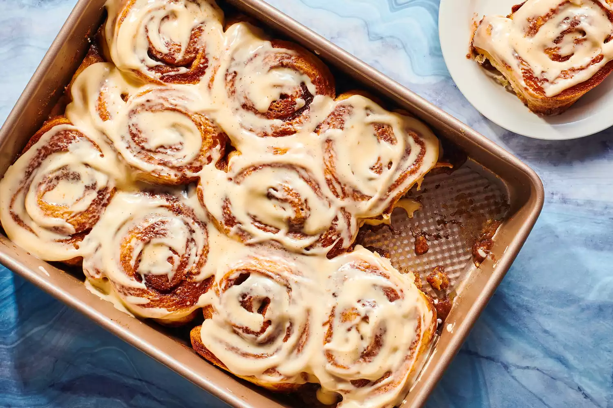

Special Cinnamon rolls

Description
For my final recipe I decided to do my favorite dessert it is not really much of a recipe like making something from scratch, but
it is more like taking something and addling a little more flare to it.
Ingredients
- store bought Cinnamon rolls
- Large baking dish
- Brown sugar
- butter
- heavy whipping cream
Steps
- Take out your cinnamon rolls from its container and place them in the baking dish (make sure you have non stick spray i make this mistake a lot).
- You are going to pour a good amount of whipping cream not enough to overload it
- get a bowl and place a quarter of a stick of butter in there and warm it up in the microwave and once that is done you want to pour in some brown sugar and mix it
- once that is done add it into the baking dish with the cinnamon rolls and place it in the oven and wait the amount of time stated on the cinnamon rolls container